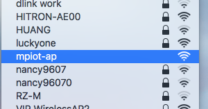

Getting started¶
要使用MicroPython@Ameba 之前，需要先將韌體燒錄至開發板內。
燒錄方式可參考 how_to_install_micropython_rtl8195am
Basic Usage¶
首先將MicroUSB Cable 接上開發板，透過終端機程式, ex: minicom, putty 或 TeraTerm, 設定包率為8N1, 115200，並連進開發板。 試著按幾次Enter，你會在畫面看到:
>>>
>>>
>>>
按開發板上的reset鍵，你也可以看到開機畫面。
Mounting Ramfs, ramfs size = 102400
Mounting Flashfs
Mount flash to vfs done
main.py not found
MicroPython v1.8.7-979-g9fb2a76 on 2017-05-09; AmebaBoard with RTL8195A
>>>
註解
Ctrl+B 可以重啟REPL (不做硬體重置)
Ctrl+E 可進入paste mode。在此模式貼上程式碼後輸入Ctrl+D，MicroPython會執行你所貼上的程式碼。
Hardware Control¶
目前支援功能：
| function | module |
|---|---|
| GPIO | umachine.Pin |
| I2C | umachine.I2C |
| LOGUART | umachine.LOGUART |
| SDIO_HOST | umachine.SDIO_HOST |
| UART | umachine.UART |
| SPI | umachine.SPI |
| RTC | umachine.RTC |
| Watchdog | umachine.WDT |
| ADC | umachine.ADC |
| DAC | umachine.DAC |
| RTC | umachine.RTC |
| CRYPTO | umachine.CRYPTO |
| TIMER | umachine.TIMER |
| PWM | umachine.PWM |
硬體控制可以參考下圖方格所定義的名稱。ex: PA_1, PA_2, PD_5 ...

控制GPIO僅需要幾行程式碼。
# To control I/O output
>>> from umachine import Pin
>>> pin1 = Pin("PA_1", mode=Pin.OUT)
>>> pin1.toggle()
>>> pin1.value(1)
>>> pin1.value(0)
# To read I/O's value
>>> pin2 = Pin("PC_0", mode=Pin.IN, pull=Pin.OPEN_DRAIN)
>>> pin2.value()
1
Networking¶
MicroPython@RTL8195AM 支援的無線功能有：
- WLAN (WiFi)
- NFC (comming soon)
WLAN¶
WLAN 支援STA, AP 以及STA_AP模式。
但目前還無法實現真正的Access Point功能( WAN to local network )，主要原因是內建的Lwip 不支援network interface間路由功能。
WLAN 基本功能¶
WLAN 可以讀取mac address, 掃描周圍的WiFi SSID，亦可以讀取目前RSSi數值。
>>> import WiFiTool
>>> wlan_drv = WiFiTool.wlan_drv()
>>> wlan_drv.off()
>>> wlan_drv.on(wlan_drv.STA)
>>> wlan_drv.mac()
'28:c2:dd:dd:42:7d'
>>> def scan_your_wifi_around_you():
... wifi_list = wifi.scan()
... if wifi_list is not None:
... for i in wifi_list:
... print("SSID is %s, BSSID is %s, channel is %d and security type is %d" % (i.ssid, i.bssid, i.channel, i.security))
... else:
... print("scan nothing")
>>> scan_your_wifi_around_you()
>>> for i in range(100):
... scan_your_wifi_around_you()
註解
縮排很重要，1格縮排為4個空格。
TCP/IP功能是透過Lwip stack 所完成的，使用網路功能必須要先經過3個步驟。
1 設定WLAN為STA mode, AP mode 或 STA_AP mode (hybrid mode)。
2 WiFi 連線與安全性認證
3 選擇使用DHCP 索取IP或是設定固定IP
Station mode 範例¶
以下是一個使用Station mode 去連另外一台AP的範例，並透過socket 模組去進行DNS query。
>>> from wireless import WLAN
>>> import socket
>>> wifi = WLAN(mode=WLAN.STA) # station mode
>>> WLAN. # press TAB to auto complete
scan rssi mac connect
disconnect STA AP STA_AP
PROMISC P2P OPEN WEP_PSK
WEP_SHARED WPA_TKIP_PSK WPA_AES_PSK WPA2_TKIP_PSK
WPA2_AES_PSK WPA2_MIXED_PSK WPA_WPA2_MIXED WPS_OPEN
WPS_SECURE
>>> try:
... ssid = "YOUR-SSID"
... password = "YOUR-PASSWORD"
... wifi.connect(ssid=ssid, auth=(WLAN.WPA2_AES_PSK, password), dhcp=True)
... except OSError:
... print("connect to %s failed" % ssid)
RTL8195A[Driver]: set ssid [YOUR_SSID]
RTL8195A[Driver]: start auth to xx:xx:xx:xx:xx:xx
RTL8195A[Driver]: auth success, start assoc
RTL8195A[Driver]: association success(res=3)
RTL8195A[Driver]: set pairwise key to hw: alg:4(WEP40-1 WEP104-5 TKIP-2 AES-4)
RTL8195A[Driver]: set group key to hw: alg:4(WEP40-1 WEP104-5 TKIP-2 AES-4) keyid:1
>>> netif = wifi.getnetif()
>>> print(netif)
NETIF(ip=192.168.14.100 ,netmask=255.255.255.0 ,gateway=192.168.14.1)
>>> socket.getaddrinfo("www.google.com", 80)
[(2, 1, 0, '', ('74.125.203.104', 80))]
AP mode 範例¶
或者，你也可以將Micropython@RTL8195AM 設定成AP mode
>>> from wireless import WLAN
>>> wifi = WLAN(mode=WLAN.AP)
>>> wifi.start_ap()
現在使用你的電腦去掃描周圍的WiFi訊號，應該可以看到mpiot-ap的ssid。
STA_AP mode 範例¶
MicorPython@RTL8195AM 更支援混合模式(STA + AP)。
但比較特殊的是，當參數使用WLAN.STA_AP時，會回傳一個tuple數據組：(sta, ap)，會這樣設計是因為他們有各自不同的network interface。
>>> from wireless import WLAN
>>> sta, ap = WLAN(mode.WLAN.STA_AP)
>>> sta_netif = sta.getnetif()
>>> ap_netif = ap.getnetif()
>>> try:
... sta.connect(ssid="TARGET-SSID", auth=(WLAN.WPA_AES_PSK, "TARGET-PASSWORD"), dhcp=True)
... except OSError:
... print("station mode connect failed")
>>>
RTL8195A[Driver]: set ssid [YOUR_SSID]
RTL8195A[Driver]: start auth to xx:xx:xx:xx:xx:xx
RTL8195A[Driver]: auth success, start assoc
RTL8195A[Driver]: association success(res=3)
RTL8195A[Driver]: set pairwise key to hw: alg:4(WEP40-1 WEP104-5 TKIP-2 AES-4)
RTL8195A[Driver]: set group key to hw: alg:4(WEP40-1 WEP104-5 TKIP-2 AES-4) keyid:1
>>> sta_netif = sta.getnetif()
>>> print(sta_netif)
NETIF(ip=192.168.14.100 ,netmask=255.255.255.0 ,gateway=192.168.14.1)
>>> ap.start_ap(ssid="thisisatest", auth=(WLAN.WPA_AES_PSK, "1234567890"))
現在使用你的電腦去掃描周圍的WiFi訊號，應該就可以看到thisisatest這個ssid，且使用密碼1234567890即可登入。
註解
Lwip 若收到ICMP request，會回ICMP echo。換句話說，你可以ping到開發版。